Releasenotes eBlinqx Hypotheekadvies – Mei 2026
📢 Live in eBlinqx Hypotheekadvies!
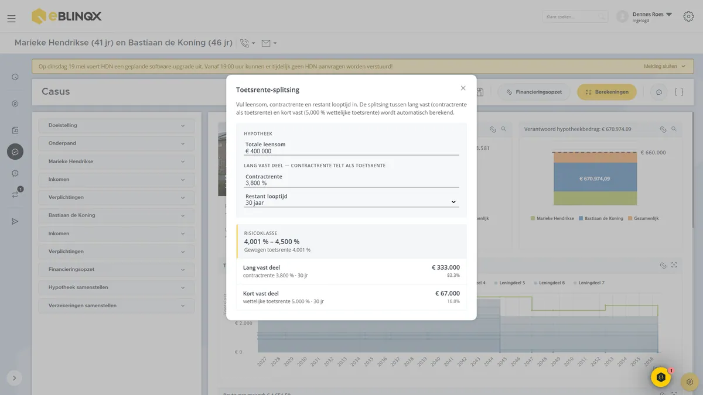
IT-30860: Slimmer splitsen van leningdelen voor een hogere maximale hypotheek
We hebben een nieuwe rekenmethode toegevoegd die je leningdeelconstructie automatisch optimaliseert. De berekening past de verdeling van je leningdelen zo aan dat je uitkomt op de laagste gewogen gemiddelde toetsrente, en daarmee op een zo hoog mogelijke maximale hypotheek. Het resultaat is een nieuwe leningdeelconstructie waarmee je klant binnen dezelfde inkomenssituatie meer kan lenen, zonder dat je zelf hoeft te puzzelen met buckets en rentes.
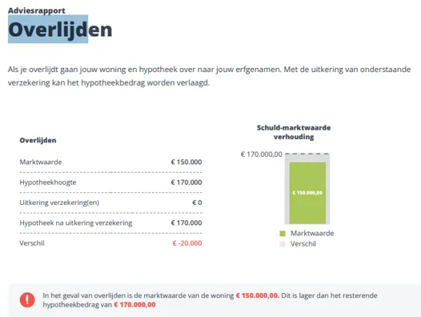
⚙️ IT-30805: Slimmere berekening van marktwaarde in ORV-scenario’s alleenstaande
De berekening van de marktwaarde binnen ORV-scenario’s is verbeterd. Afhankelijk van het startmoment van het scenario wordt nu automatisch de juiste waarde gebruikt, zoals de huidige marktwaarde of de verwachte waarde na verbouwing. Hierdoor krijg je nauwkeurigere berekeningen en kun je jouw advies nog beter onderbouwen.
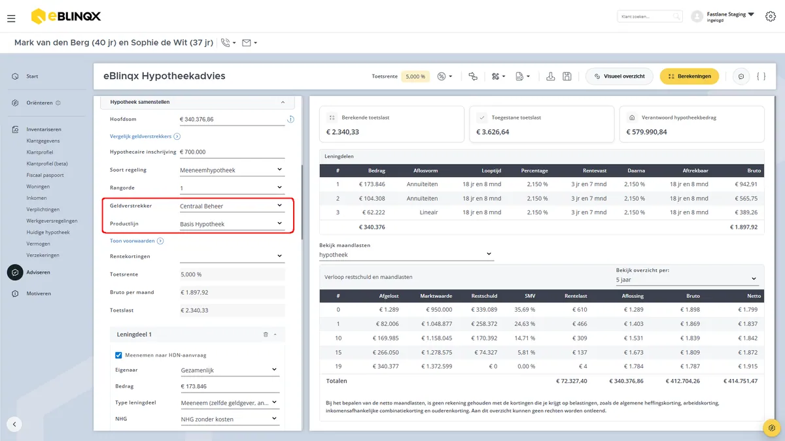
🐞 IT-30336: Betrouwbare productovername bij onderhandse verhoging
Bij een onderhandse verhoging wordt het juiste hypotheekproduct nu automatisch overgenomen vanuit de huidige situatie. Hierdoor werk je direct met consistente gegevens en voorkom je foutieve keuzes. Ook krijg je duidelijkere meldingen wanneer iets niet klopt, zodat je sneller en zonder onderbrekingen je advies kunt afronden.
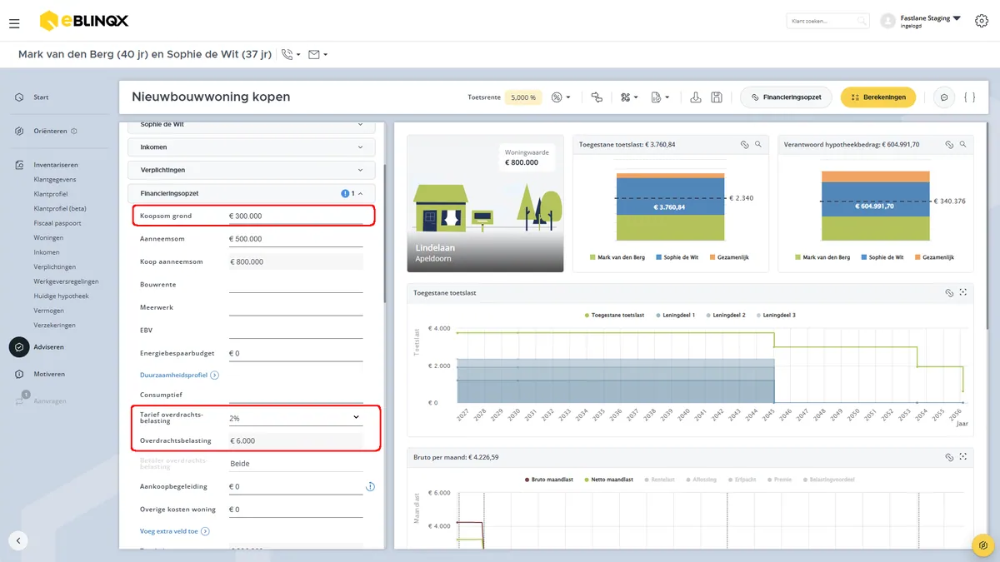
IT-20995: Overdrachtsbelasting ook instelbaar bij nieuwbouw
Bij de doelstelling "Een nieuwbouwwoning kopen" is nu een keuzemenu voor overdrachtsbelasting beschikbaar, net als bij bestaande bouw. De standaardwaarde staat op 0,0%, wat voor de meeste nieuwbouwsituaties correct is. Pas je het percentage aan, dan wordt de overdrachtsbelasting automatisch berekend over de koopsom grond en opgenomen in de financieringsopzet. In het HDN-aanvraagformulier wordt het bijbehorende veld automatisch ingevuld, zodat je dit niet handmatig hoeft over te nemen.
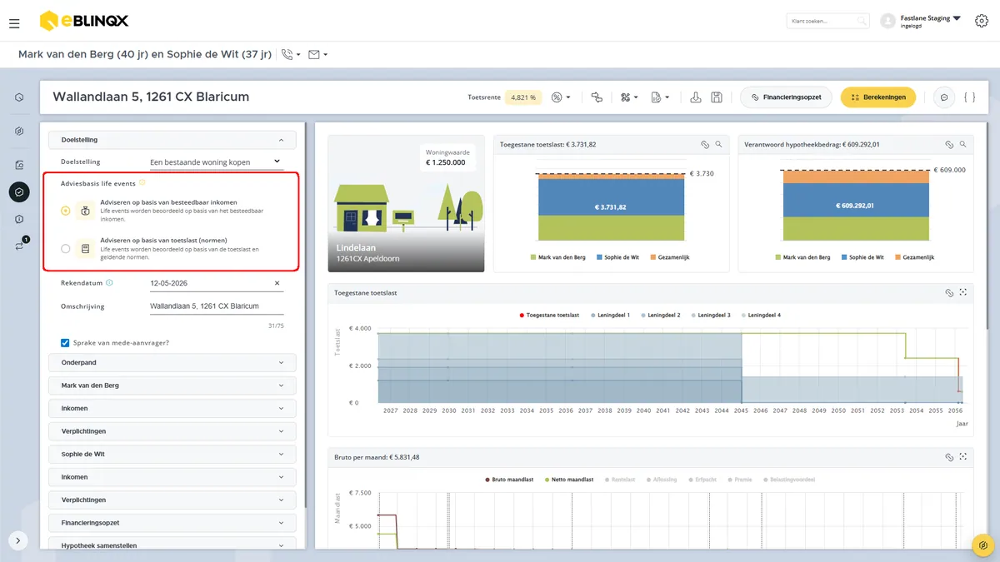
⚙️ IT-30778: Duidelijkere keuze in adviesbasis bij doelstellingen
Je kunt nu bij het vastleggen van een doelstelling direct kiezen of je adviseert op basis van de gedragscode of het besteedbaar inkomen. Dit geeft je meer controle en transparantie in je adviesproces, zodat je sneller en bewuster de juiste onderbouwing kiest voor jouw klant.
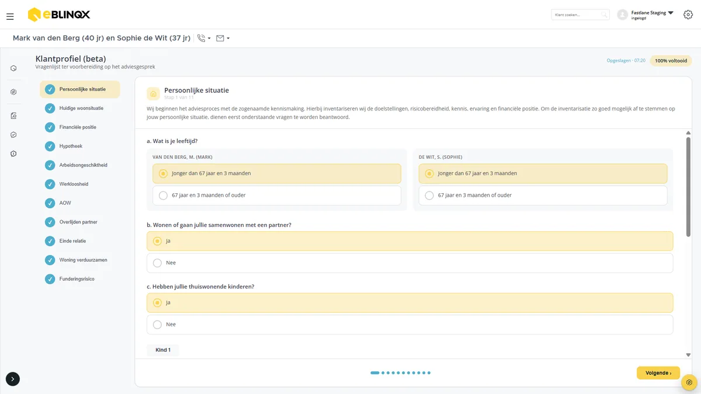
IT-30454: Klantprofiel 2.0 – redesign & optimalisatie
Het klantprofiel in eBlinqx Hypotheekadvies heeft een grondige vernieuwing gekregen. De opzet is overzichtelijker, de navigatie intuïtiever en de weergave van klantgegevens sluit beter aan op jouw werkproces als adviseur. Je vindt de informatie die je nodig hebt sneller terug, zodat je meer tijd overhoudt voor het gesprek met je klant.
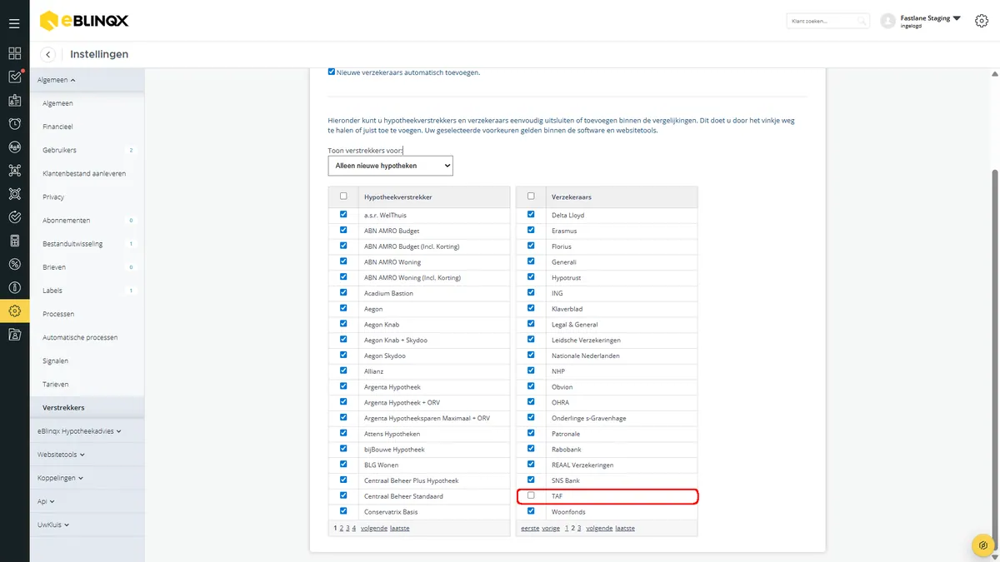
🐞 IT-30341: Verzekeraars-overzicht toont alleen actieve aanbieders
Uitgevinkte verzekeraars worden nu niet meer getoond in overzichten en berekeningen. Hierdoor werk je altijd met een actuele en relevante selectie van aanbieders, wat zorgt voor een overzichtelijker en betrouwbaarder adviesproces.
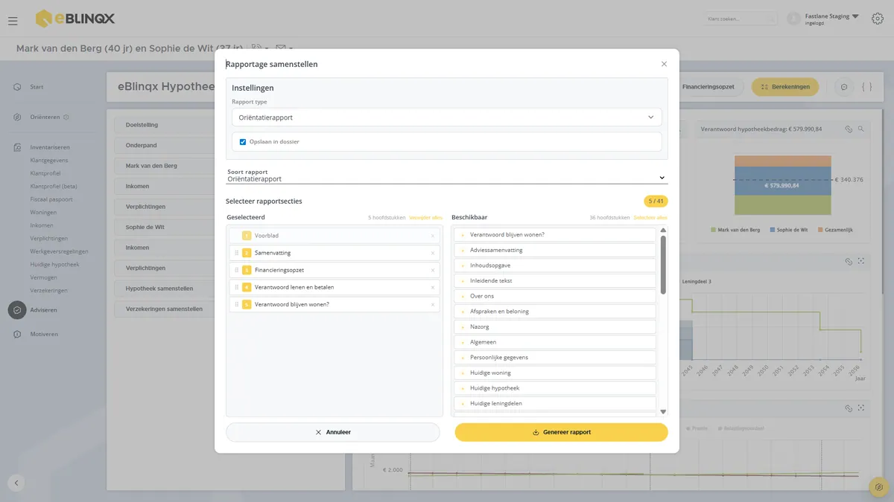
🐞 IT-30412: Correcte datumnotatie bij downloaden van rapporten
De datumweergave bij het downloaden van rapporten is nu duidelijk en contextafhankelijk. Bij een oriëntatierapport zie je voortaan Datum oriëntatierapport en bij een adviesrapport Datum adviesrapport. Dit zorgt voor meer duidelijkheid en een consistente gebruikerservaring.
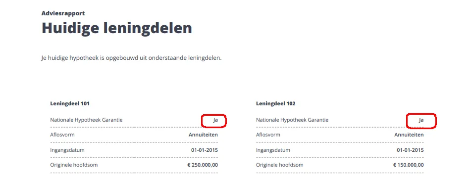
IT-30339: NHG-indicatie in rapport "Huidige leningdelen" klopt nu altijd
eBlinqx Hypotheekadvies toont de NHG-indicatie in de rapportsectie "Huidige leningdelen" voortaan direct op basis van de vastgelegde inventarisatiedata per leningdeel. Is NHG voor een leningdeel vastgelegd als "ja", dan verschijnt dat ook zo in het rapport. Bestaande rapporten tonen na hergeneratie automatisch de correcte NHG-status, zonder dat je daar iets voor hoeft aan te passen.
IT-30938: Ondersteuning voor Ockto brondata versie 3.1
eBlinqx Hypotheekadvies ondersteunt nu ook Ockto brondata versie 3.1, naast de al bestaande ondersteuning voor versie 5.2. Het systeem herkent automatisch welke Ockto-versie er wordt aangeleverd en past de verwerking daar direct op aan. Je hoeft daar zelf niets voor in te stellen. Je bedient voortaan ook klanten met een iWise-koppeling volledig digitaal. De brondata komt correct binnen, ongeacht welke Ockto-versie jouw klant gebruikt.
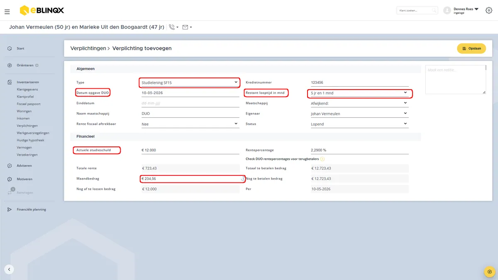
IT-27270: Studieleningen in Inventarisatie: duidelijker, slimmer en beter vooringevuld
Werk je met studieleningen in het onderdeel Verplichtingen? Dan zie je een aantal verbeteringen die je werk een stuk sneller en nauwkeuriger maken.
1. De benamingen zijn aangepast zodat je direct weet waar je mee werkt:
- Studielening heet voortaan Studielening SF15 (voor september 2015)
- Studievoorschot heet voortaan Studielening SF35 (na september 2015)
- Ingangsdatum heet voortaan Datum opgave DUO
- Kredietbedrag heet voortaan Actuele studieschuld
2. Je kunt nu de resterende looptijd invullen in maanden — de einddatum wordt dan automatisch berekend. Andersom werkt het ook: vul je een einddatum in, dan berekenen wij de looptijd voor je. Precies zoals je dat gewend bent bij hypotheken.
3. Een aantal velden worden automatisch voor je ingevuld, zodat je sneller door het proces gaat:
- Datum opgave DUO wordt vooringevuld met de huidige datum (aanpasbaar)
- Status wordt vooringevuld als Lopend (aanpasbaar)
- Rentepercentage SF15 wordt vooringevuld op 2,21% (aanpasbaar)
- Rentepercentage SF35 wordt vooringevuld op 2,57% (aanpasbaar)
4. Het berekende maandbedrag kun je nu handmatig aanpassen. Dit aangepaste bedrag wordt meegenomen in de hypotheekberekening. Houd er rekening mee dat de minimale maandbedragen gelden: € 45,41 voor SF15 en € 5,- voor SF35.
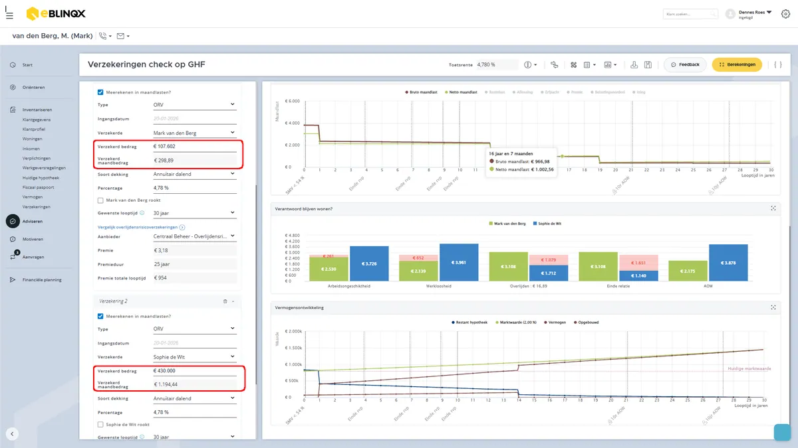
⚙️ IT-29237: Slimmer verzekeringsvoorstel in de sidebar op basis van jouw inventarisatie
Vanaf nu sluit het verzekeringsvoorstel in de sidebar altijd netjes aan op de verzekeringen die jij hebt geïnventariseerd. EBlinqx hypotheekadvies berekent automatisch het verschil voor GHF en CBI en doet alleen een voorstel als er écht een tekort is—zo houd jij het advies helder en voorkom je onnodige verzekeringen. Zodra jij een bedrag bevestigt, blijft jouw keuze uiteraard leidend.
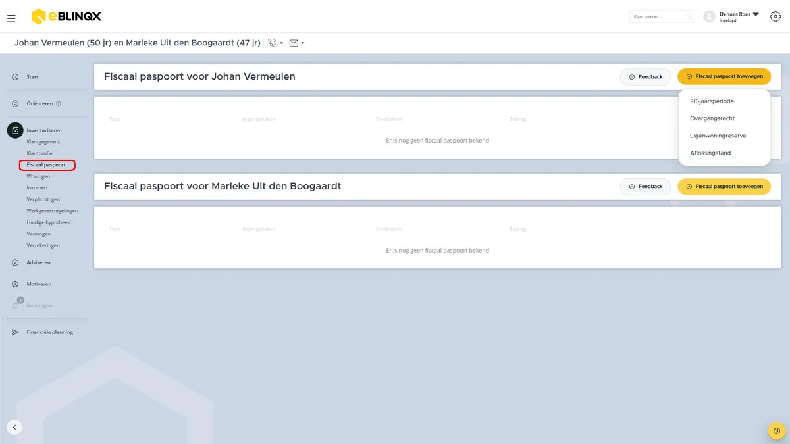
⚙️ IT-30817: Logischere plaatsing Fiscaal paspoort in Inventariseren
Je vindt het Fiscaal paspoort nu direct onder Klantprofiel. Hierdoor sluit de volgorde beter aan op jouw werkwijze en kun je klantgegevens nog intuïtiever en efficiënter vastleggen.
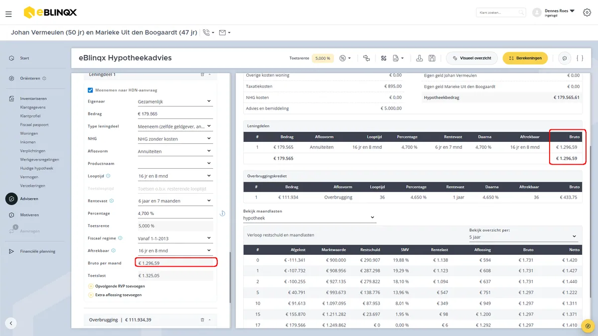
🐞 IT-30781: Correcte herberekening bruto maandlast bij aanpassen leningdeel
Wanneer je een leningdeel aanpast, wordt de bruto maandlast nu automatisch en direct correct bijgewerkt. Zo werk je altijd met consistente en actuele cijfers in je financieringsopzet, zonder extra handelingen
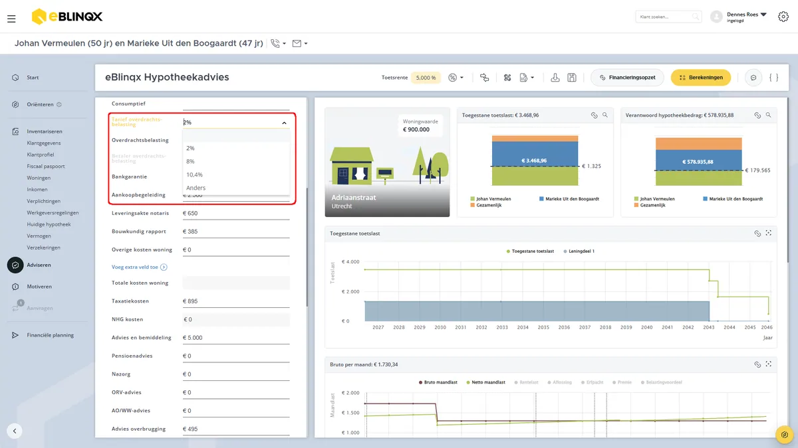
⚙️ IT-29972: Slimmere selectie overdrachtsbelasting
Bij het kiezen van de overdrachtsbelasting helpt eBlinqx Hypotheekadvies je nu nog beter. De software controleert automatisch de leeftijd van de klant(en) en de woningwaarde. Wanneer de startersvrijstelling of het 1%-tarief niet mogelijk is, worden deze opties niet meer getoond in het keuzemenu. Zo zie je alleen de tarieven die daadwerkelijk relevant zijn en verklein je eenvoudig de kans op fouten tijdens je advies.
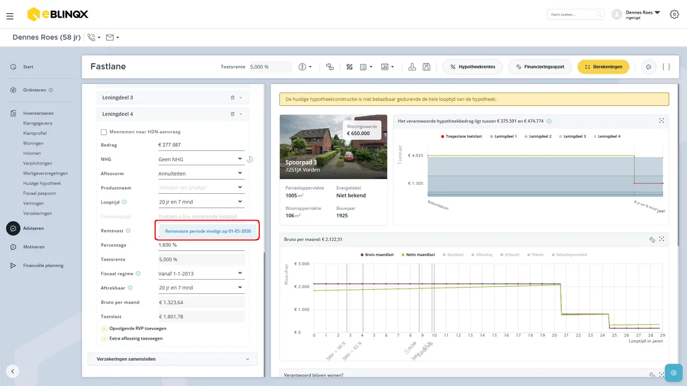
🐞 IT-29889: Correcte weergave einddatum rentevastperiode bij bestaande leningdelen
De einddatum van de rentevastperiode wordt nu altijd correct en consistent weergegeven, ongeacht de gekozen rekendatum. Hierdoor kun je erop vertrouwen dat de contractuele einddatum van elk leningdeel exact wordt overgenomen in je berekening. Dat voorkomt verwarring en zorgt voor maximale betrouwbaarheid in jouw advies.
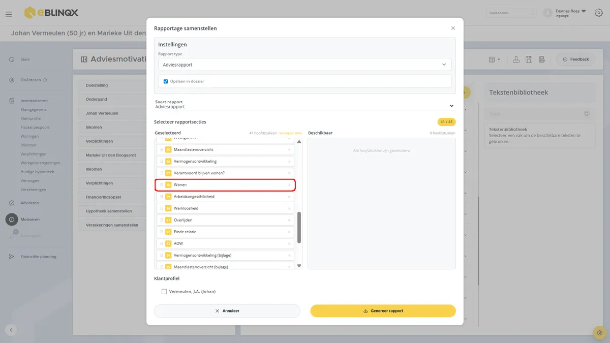
⚙️ IT-30779: Logischere volgorde in rapportthema’s
We hebben de volgorde van de thema’s in ‘Rapporten samenstellen’ verbeterd. Het onderdeel ‘Wonen’ staat nu direct boven ‘Arbeidsongeschiktheid’, zodat je sneller en intuïtiever de juiste onderdelen terugvindt bij het samenstellen van rapporten.
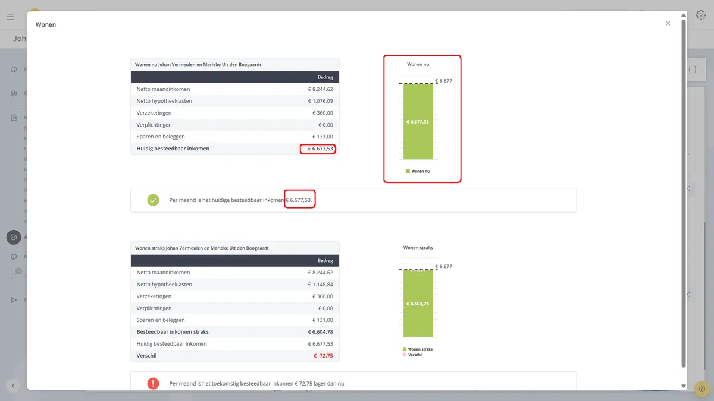
🐞 IT-30768: Correcte weergave besteedbaar inkomen in Wonen Nu
Het referentiestreepje in de verdiepende schermen van Wonen Nu wordt nu correct gebaseerd op jouw huidig besteedbaar inkomen. Hierdoor krijg je een betrouwbaarder en consistenter inzicht, zodat je sneller en met meer vertrouwen jouw advies kunt onderbouwen
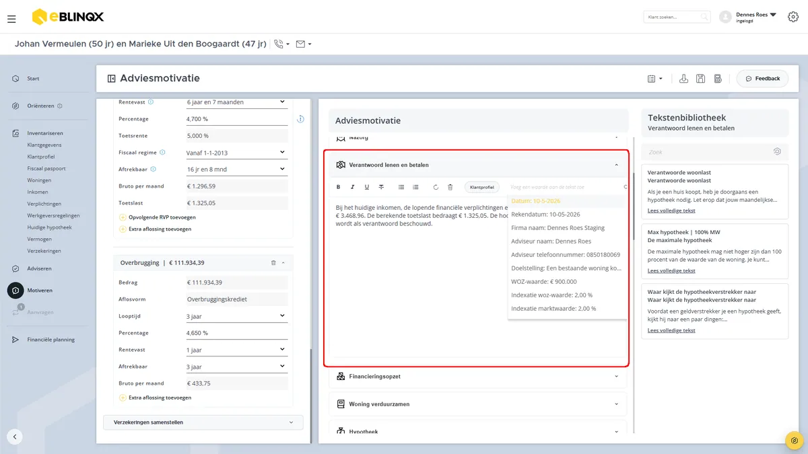
🐞 IT-30782: Opgeloste bewerkbaarheid adviesmotivering ‘Verantwoord lenen en betalen’
Je kunt de tekst in het onderdeel Verantwoord lenen en betalen weer volledig aanpassen en verwijderen zoals je gewend bent. Ook zijn overbodige elementen uit dit scherm verwijderd, zodat je weer een duidelijke en rustige werkomgeving hebt bij het motiveren van je advies.
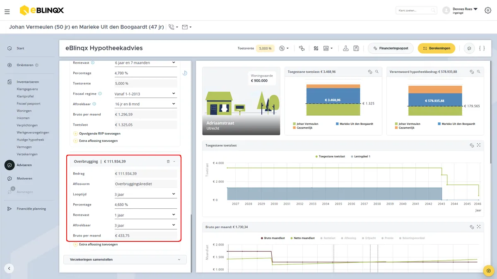
⚙️ IT-29803: Overbruggingshypotheek uitgebreid met 3 jaar renteaftrek en flexibele rentevastperiode
Je kunt nu bij de overbruggingshypotheek rekenen op een renteaftrek die volledig aansluit op de verlengde looptijd van 3 jaar. Daarnaast kies je eenvoudig uit variabel, 1, 2 of 3 jaar vaste rente. Zo sluit de overbruggingshypotheek nóg beter aan op de situatie van jouw klant en heb je meer flexibiliteit bij het adviseren.
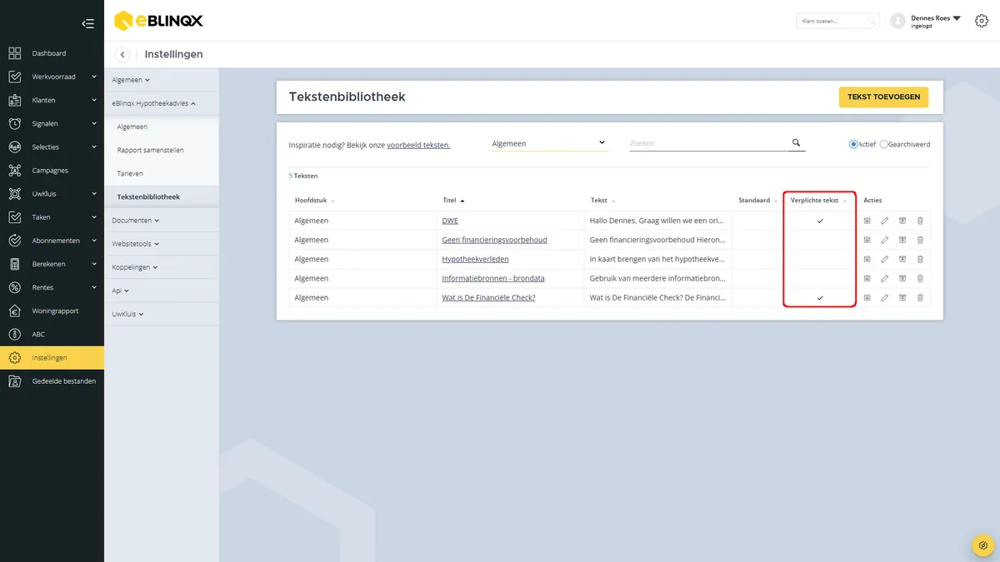
🐞 IT-30747: Verplichte teksten nu altijd in je rapport
Vanaf nu worden alle verplichte teksten automatisch toegevoegd aan je oriëntatie- en adviesrapport. Ook als je de sectie ‘Adviesmotivering’ niet opent, ben je er zeker van dat jouw rapport altijd compleet en compliant is. Dat scheelt tijd én voorkomt dat belangrijke informatie ontbreekt.
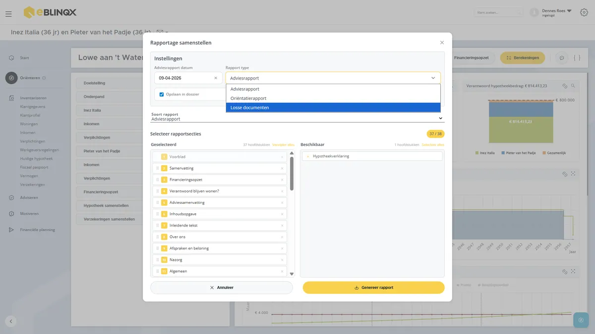
🐞 IT-30410: Hypotheekverklaring staat nu op de juiste plek
De Hypotheekverklaring is nu exclusief beschikbaar onder Losse documenten. Daardoor werk je overzichtelijker en weet je zeker dat dit document niet meer onbedoeld in een adviesrapport terechtkomt
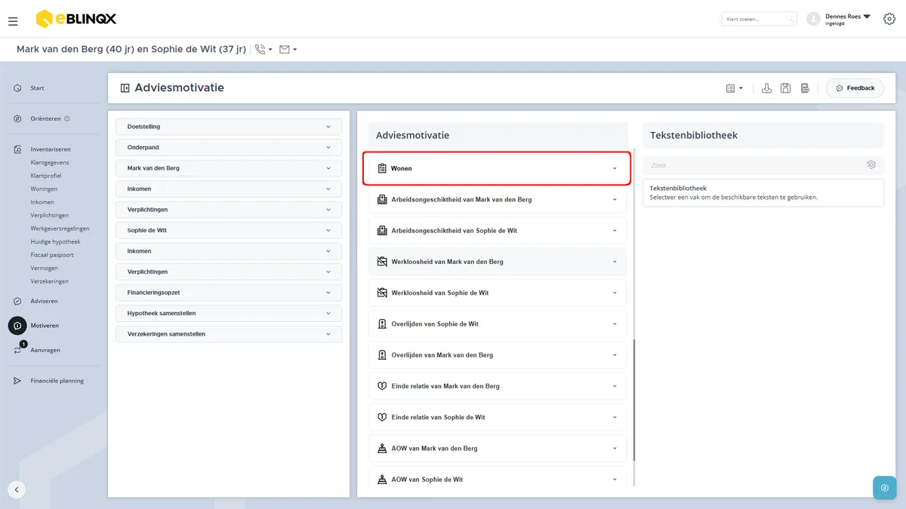
🆕 IT-30371: Nieuwe Wonen-sectie bij advies op basis van CBI
Werk je met de adviesmethodiek Consumptief Besteedbaar Inkomen? Dan heb je nu een speciale Wonen-sectie tot je beschikking. Je kunt eenvoudig jouw motivatie vastleggen, terwijl deze automatisch wordt meegenomen in een aparte pagina in het adviesrapport. Ook vind je een nieuw hoofdstuk in de tekstenbibliotheek, zodat je jouw advies nog completer en consistenter kunt onderbouwen.
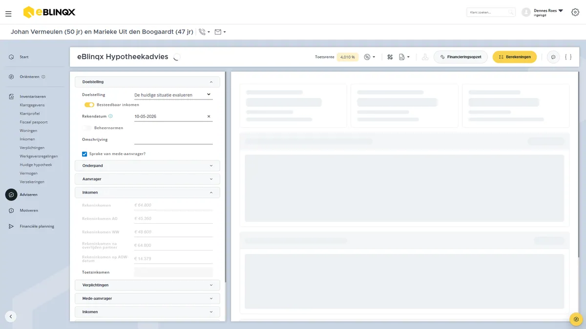
Viel het je op dat er soms onjuiste teksten of gegevens kort zichtbaar waren terwijl een pagina nog aan het laden was? Dat is verleden tijd. Wat betekent dit voor jou? Tijdens het laden van gegevens zie je voortaan een skeleton laadscherm — een rustige, neutrale weergave die aangeeft dat de inhoud nog wordt geladen. Zo zie je nooit meer tijdelijk foute of onvolledige informatie, en weet je altijd waar je aan toe bent. Het resultaat: een rustiger, betrouwbaarder gevoel bij het werken met de applicatie.
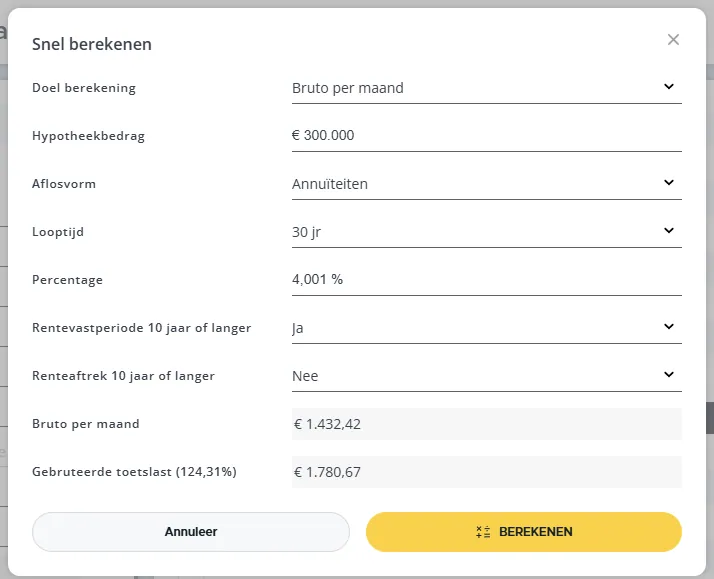
🐞 IT-30425: Correcte verwerking van toetslast bij aflopende renteaftrek
Wanneer de hypotheekrenteaftrek van een leningdeel nog tijdelijk doorloopt, houdt de software daar nu ook in de toetslastberekening correct rekening mee. Je profiteert daardoor van een nauwkeurigere berekening: het fiscale voordeel wordt toegepast zolang de renteaftrek loopt, en pas daarna wordt gerekend met de gebruteerde last. Dit zorgt voor een realistischer uitkomst die beter aansluit op de werkelijke situatie van jouw klant
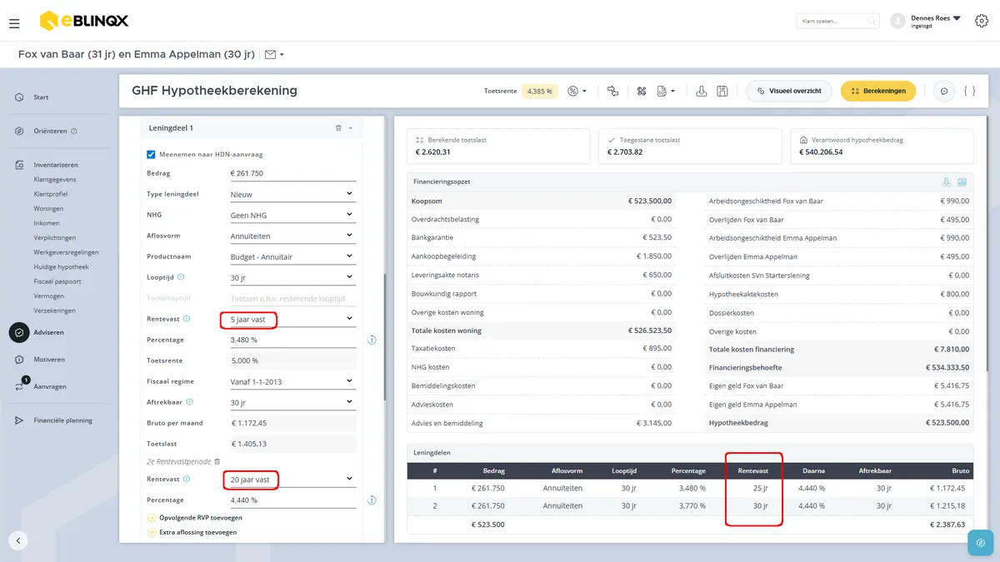
🐞 IT-30003: Correcte weergave van rentevastperiodes bij meerdere leningdelen
We hebben een verbetering doorgevoerd in de weergave van rentevastperiodes in de financieringsopzet. Wanneer je werkt met meerdere leningdelen en een opvolgende rentevastperiode instelt, worden de periodes nu correct weergegeven. Hierdoor zie je per leningdeel direct de juiste rentevastperiode, zonder dat deze onbedoeld wordt opgeteld. Dit zorgt voor een duidelijker en betrouwbaarder overzicht tijdens het opstellen van jouw financieringsopzet.
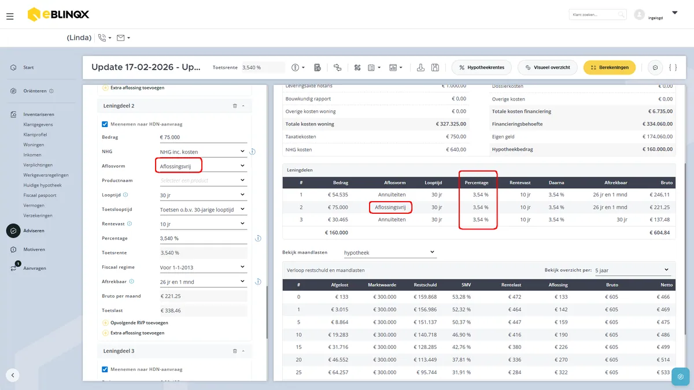
🐞 IT-29827: Correcte rente bij aflossingsvrije lening na actualiseren
Bij het actualiseren van een aflossingsvrije lening wordt nu altijd automatisch het juiste rentetarief opgehaald dat past bij de gekozen aflosvorm. Hierdoor kun je erop vertrouwen dat de berekening direct klopt en je niet handmatig hoeft te controleren of het juiste percentage is toegepast. Dat zorgt voor meer zekerheid én tijdsbesparing in jouw adviestraject.
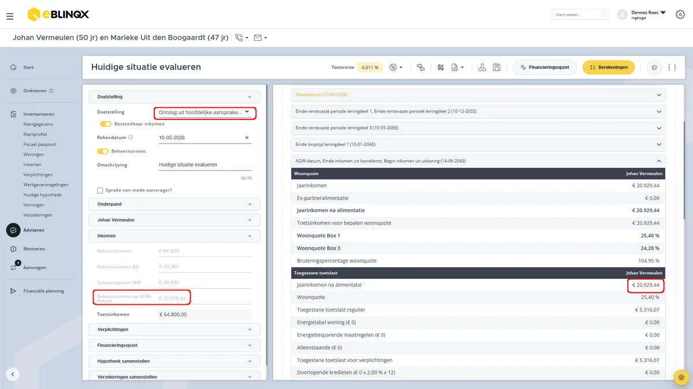
🐞 IT-30395: Correcte AOW-berekening voor toetslast op AOW-leeftijd
Je kunt nu vertrouwen op een volledig correcte berekening van de toetslast op AOW-leeftijd. De software houdt automatisch rekening met de juiste AOW-situatie (alleenstaand of gehuwd), zodat je direct een nauwkeurig en betrouwbaar advies kunt geven aan je klant.
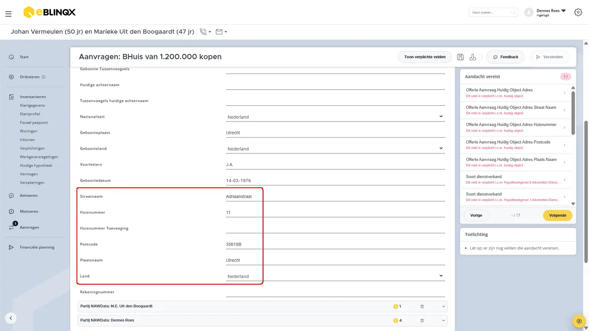
🐞 IT-30350: Correct gebruik van correspondentieadres in HDN-aanvragen
Vanaf nu wordt in HDN-aanvragen automatisch jouw ingestelde correspondentieadres gebruikt. Hierdoor sluiten je aanvragen beter aan op de klantgegevens en voorkom je handmatige correcties achteraf. Dat werkt sneller en voorkomt fouten in het aanvraagproces.
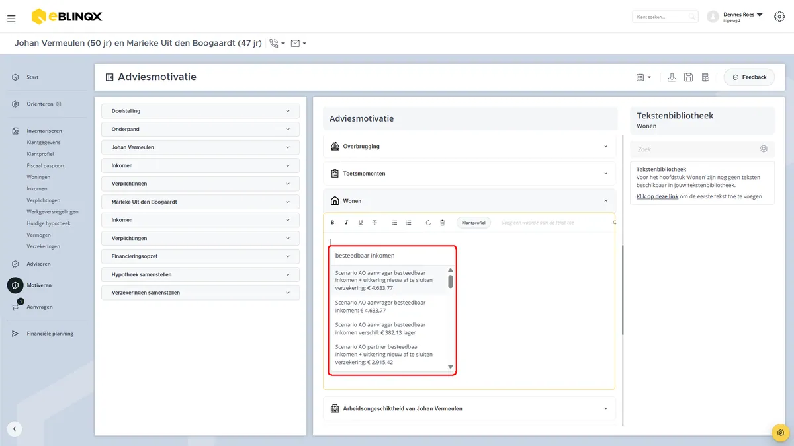
⚙️ IT-30776: Consistente benaming binnen adviesmethodiek besteedbaar inkomen
Binnen de adviesmethodiek ‘Adviseren op basis van besteedbaar inkomen’ is de terminologie nu volledig in lijn gebracht. Je ziet voortaan overal de duidelijke benaming ‘besteedbaar inkomen’, waardoor je sneller en zonder verwarring kunt werken binnen deze methodiek.
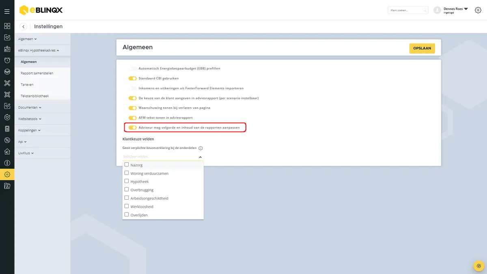
⚙️ IT-30760: Meer of minder controle over rapportopbouw
Je hebt nu als beheerder volledige controle over hoe rapporten worden opgebouwd. Door een eenvoudige instelling kun je bepalen of adviseurs de volgorde en inhoud van rapporten mogen aanpassen. Zet je deze optie uit, dan blijven rapporten altijd consistent en volgens jouw gewenste structuur — wel zo overzichtelijk en betrouwbaar voor jou en je team.
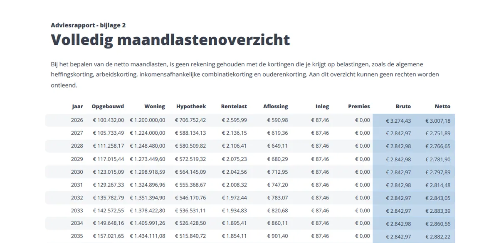
🐞 IT-30090: Nettere weergave van bedragen in het maandlastenoverzicht
De weergave van bedragen in het maandlastenoverzicht is verbeterd. Hierdoor staan de bedragen van woning en hypotheek nu duidelijker uitgelijnd en verder uit elkaar. Dit zorgt voor een overzichtelijker rapport en maakt het voor jou eenvoudiger om de maandlasten snel en prettig te bekijken.
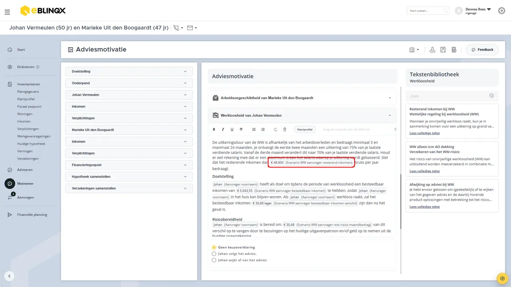
🐞 IT-30463: Correcte weergave resterend WW-bedrag in adviesmotivatie
Het resterend WW-bedrag wordt nu weer volledig en correct weergegeven in jouw adviesmotivatie. Hierdoor heb je direct inzicht in de juiste gegevens voor beide personen, wat zorgt voor een betrouwbaarder en completer advies richting jouw klant.
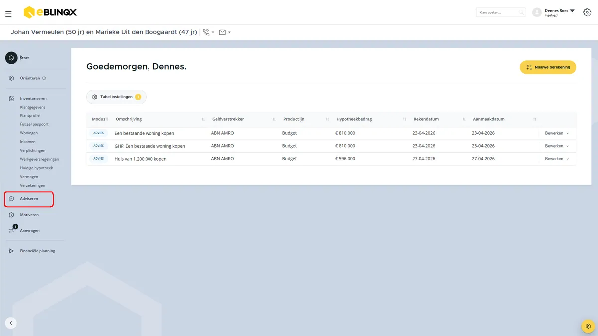
🆕 IT-29955 eBlinqx Hypotheekadvies nu ook voor jou beschikbaar
Werkte je tot nu toe met Oriënteren? Dan heb je vanaf nu ook toegang tot Advieseren — zonder dat je van omgeving hoeft te wisselen. Je kunt het oriëntatie- en adviestraject voortaan als één doorlopend proces doorlopen. Dat betekent minder schakelen, een soepelere werkstroom en een betere ervaring voor jou én je klant. Daarnaast zie je in de applicatie een meldtekst waarmee je je klant eenvoudig kunt uitnodigen om de volgende stap te zetten richting een betaalde variant bij Blinqx V&H. Wat hoef je zelf te doen? Niets — de uitbreiding is automatisch voor je ingesteld.
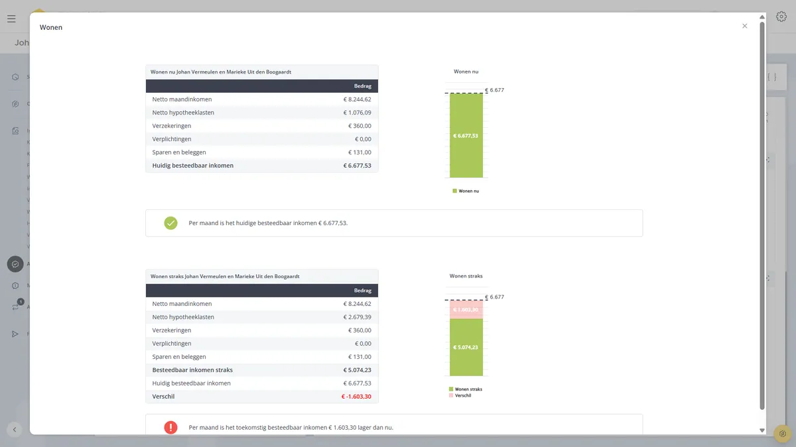
⚙️ IT-30544: Duidelijkere benamingen bij Besteedbaar inkomen
Je ziet nu per scenario direct een heldere en herkenbare omschrijving van het besteedbaar inkomen. De benamingen sluiten beter aan op de situatie van je klant (zoals arbeidsongeschiktheid of pensioen), waardoor je sneller en eenvoudiger inzicht krijgt. Daarnaast is de weergave bij Wonen opgeschoond, zodat je alleen relevante informatie ziet.
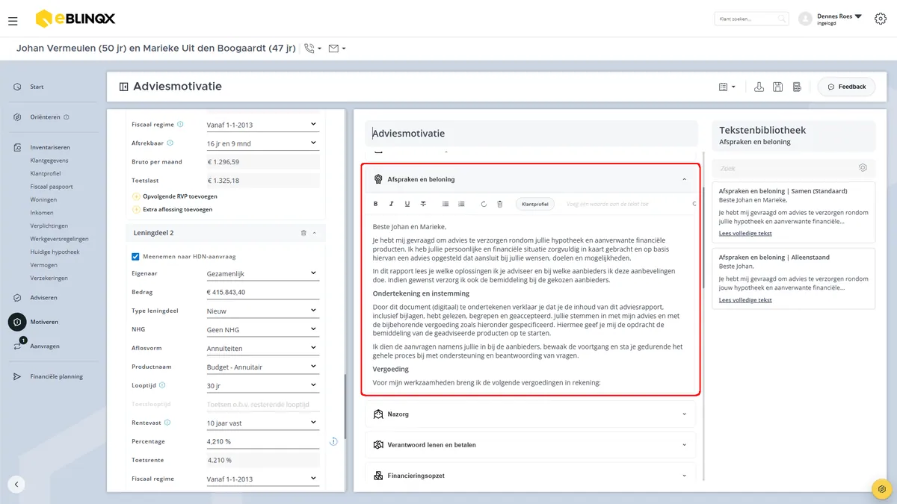
🐞 IT-30739: Adviesrapport toont weer volledig hoofdstuk ‘Afspraken en Beloning’
Het adviesrapport is verbeterd zodat het hoofdstuk ‘Afspraken en Beloning’ weer altijd correct wordt weergegeven wanneer deze in de inhoudsopgave staat. Hierdoor zijn je rapporten weer volledig en consistent, wat zorgt voor een betrouwbaardere oplevering richting je klant.
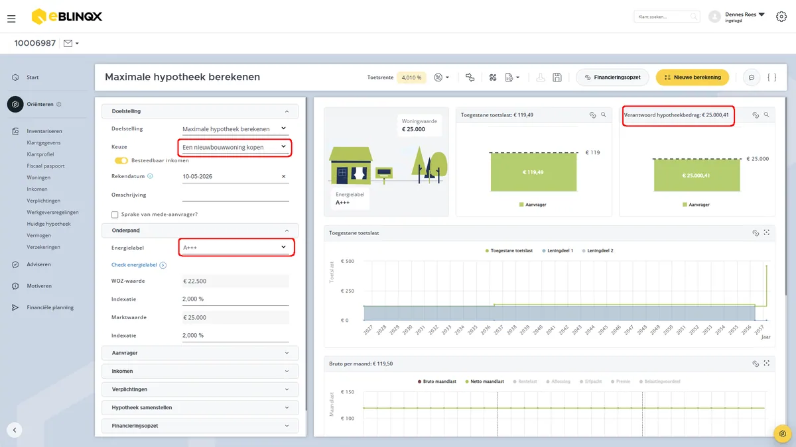
⚙️ IT-30783: Betrouwbaardere maximale hypotheekberekening
Bij het berekenen van de maximale hypotheek rekenteBlinqx Hypotheekadvies voortaan pas nadat je de juiste subdoelstelling hebt gekozen. Zo sluit de berekening direct beter aan op jouw klantwens, bijvoorbeeld bij een bestaande woning of nieuwbouwwoning, en krijg je een duidelijker en consistenter resultaat.
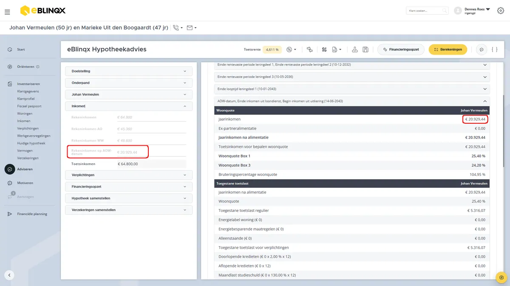
🐞 IT-29850: Correcte AOW-verwerking in financiële analyse bij ontslag hoofdelijke aansprakelijkheid
Bij de doelstelling ‘Ontslag uit hoofdelijke aansprakelijkheid’ wordt het verhoogde AOW-bedrag vanaf de AOW-datum nu volledig en correct meegenomen in de financiële analyse. Hierdoor sluit het inkomen in jouw berekening perfect aan op de gegevens in de sidebar en krijg je een betrouwbare en consistente leencapaciteitsberekening voor klanten die binnen 10 jaar de AOW-leeftijd bereiken. Zo kun je weer met volledig vertrouwen jouw advies onderbouwen.
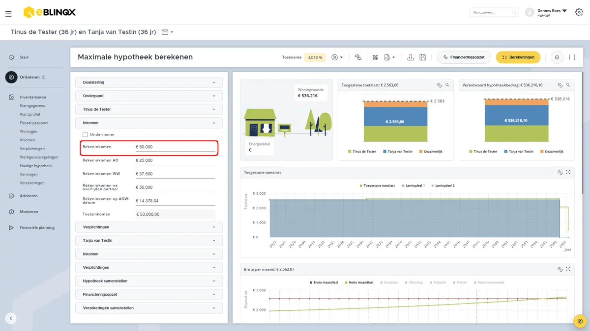
⚙️ IT-29736: Automatische overname inkomen van Oriëntatie naar Inventarisatie
Werk je eerst in Oriëntatie en ga je daarna door naar Inventarisatie? Dan hoef je het inkomen niet opnieuw in te voeren. Als er nog geen inkomen is vastgelegd in de Inventarisatie, nemen we automatisch het ingevoerde jaarinkomen voor je over onder Loondienst. Zo werk je sneller, voorkom je dubbele invoer en sluiten Oriëntatie en Advies altijd naadloos op elkaar aan.
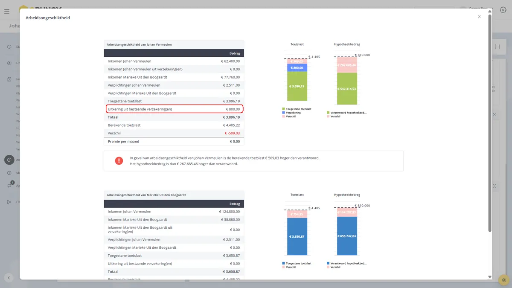
⚙️ IT-30450: Duidelijkere weergave van bestaande verzekeringsinkomsten
Je ziet nu duidelijker wanneer inkomsten afkomstig zijn uit bestaande verzekeringen die je meeneemt in het advies. Hierdoor begrijp je sneller de herkomst van bedragen bij arbeidsongeschiktheid, werkloosheid en overlijden, wat je helpt om nog transparanter en efficiënter te adviseren.
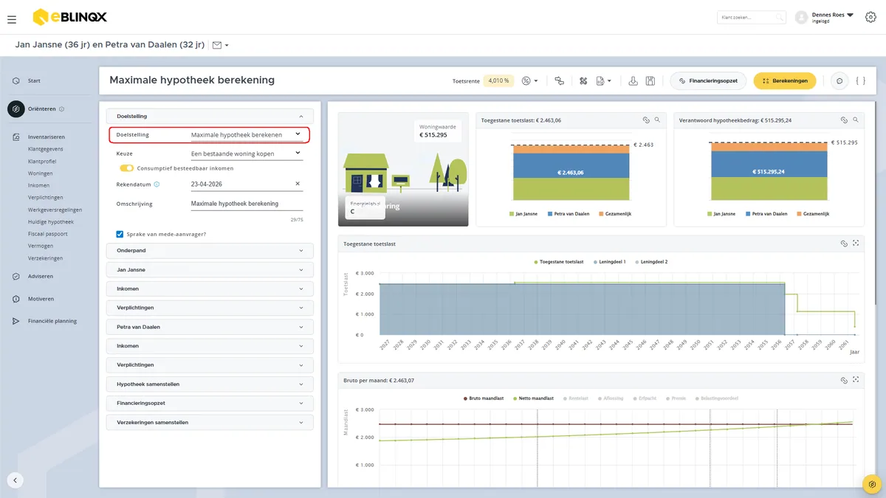
🐞 IT-29735: Berekening en hypotheekconstructie blijven behouden na dossier-aanmaak
Wanneer je een dossier automatisch aanmaakt en daarna de berekening opent, wordt jouw opgeslagen hypotheekconstructie nu direct goed geladen en blijft deze ook staan als je later terugkomt. Hierdoor zie je de blauwe melding niet onnodig meer terug en kun je zonder opnieuw opbouwen direct verder met je advies.
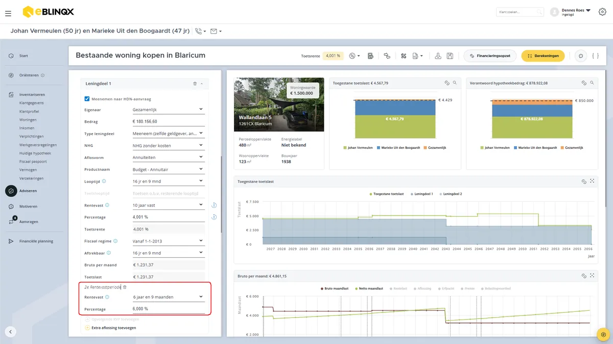
⚙️ IT-30527: Meer vrijheid bij het tonen van rente in een opvolgende rentevastperiode
Je kunt nu zelf bepalen welke rentevastperiode en welk rentepercentage je wilt tonen bij een opvolgende rentevastperiode. Daardoor kun je eenvoudiger verschillende scenario’s bespreken met jouw klant, bijvoorbeeld ook een situatie waarin de rente stijgt naar 7%. Dat geeft je meer flexibiliteit in jouw advies en maakt het makkelijker om toekomstige mogelijkheden inzichtelijk te maken.